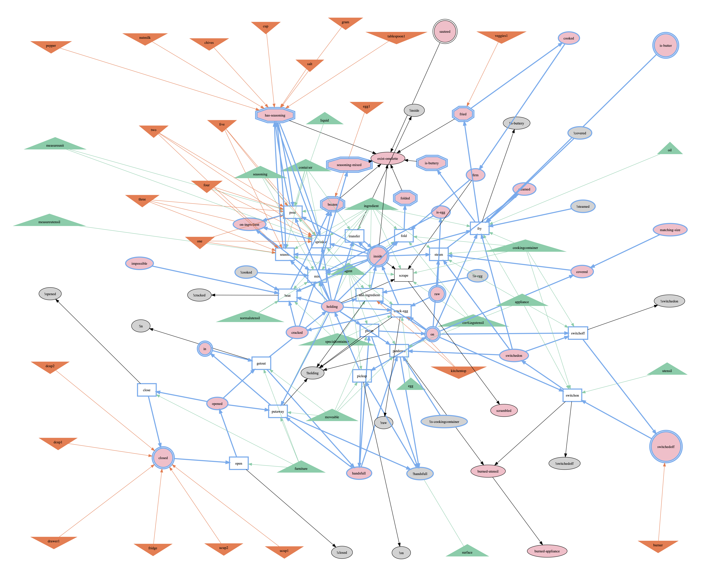

Pre-Strategist: IOBIG#
Influence Graph#
To prune objects and operators unrelated to the current problem, LEAP constructs Influence Graphs, analysing ungrounded operators and predicates in a domain:
- Types are represented in green triangles
- Objects (defined in problem and appeared in domain) are represented in orange inverted triangles
- Predicates are represented in ellipse boxes, with their positive forms in pink and negative forms in grey
- Operators are represented in rectangle boxes, with incoming edges from types, objects, preconditions, and conditions in conditional effects, and outgoing edges to effects

The first step of analysis involves pruning any predicates and operators that are causally unrelated to the goal:
- Predicates appeared in goal definition are marked by double octagon, while those appeared in initial state definition are marked by double circles
- Predicates and operators appeared in the ancestors of goal nodes are marked in blue. The other edges and nodes are pruned.
IOBIG: Ignore Objects Based on Influence Graph#
t run_name var op axiom plan cost prep parse search state
------ ----------------- ----- ----- ------- ------ ------ ------ ------- --------- -------
200914 obj_0, 56 932 11 48 48 0 0.472 0.0109751 177
200917 obj_0, prep=IOBIG 56 904 11 48 48 0.013 0.496 0.0109033 177
------ ----------------- ----- ----- ------- ------ ------ ------ ------- --------- -------
200918 obj_1, 61 1522 13 55 55 0 1.176 0.019095 348
200922 obj_1, prep=IOBIG 61 1488 13 55 55 0.013 1.212 0.0204309 348
------ ----------------- ----- ----- ------- ------ ------ ------ ------- --------- -------
200923 obj_2, 60 1280 13 54 54 0 0.846 0.0360807 580
200926 obj_2, prep=IOBIG 56 904 11 48 48 0.013 0.482 0.0108716 177
------ ----------------- ----- ----- ------- ------ ------ ------ ------- --------- -------
200929 obj_3, 101 2939 56 48 48 0 2.678 0.0189154 175
200932 obj_3, prep=IOBIG 74 1804 29 48 48 0.013 1.395 0.014408 177
------ ----------------- ----- ----- ------- ------ ------ ------ ------- --------- -------
200935 obj_4, 119 2849 11 63 63 0 1.656 0.067888 678
200937 obj_4, prep=IOBIG 56 904 11 48 48 0.014 0.487 0.0107854 177
------ ----------------- ----- ----- ------- ------ ------ ------ ------- --------- -------
201016 obj_5, 431 56777 11 53 53 0 36.668 0.53791 907
201023 obj_5, prep=IOBIG 56 904 11 48 48 0.015 0.493 0.01018 177